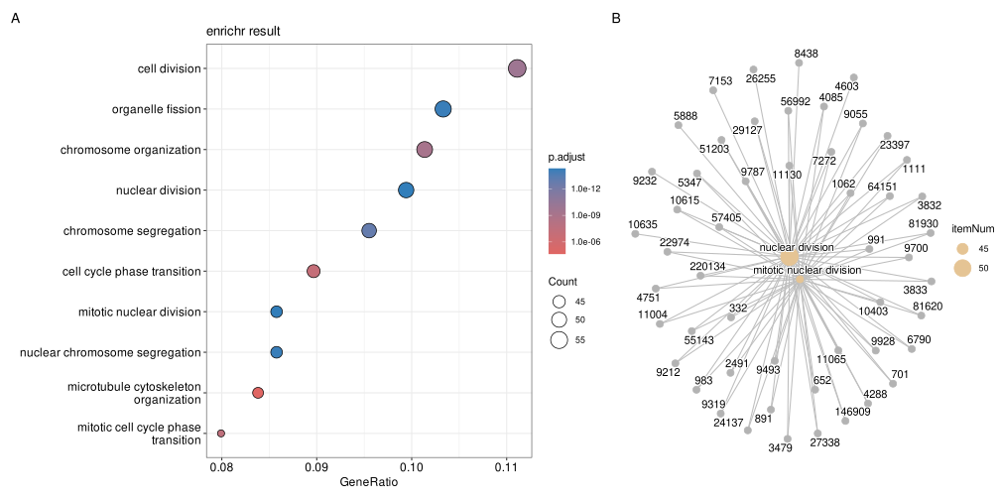
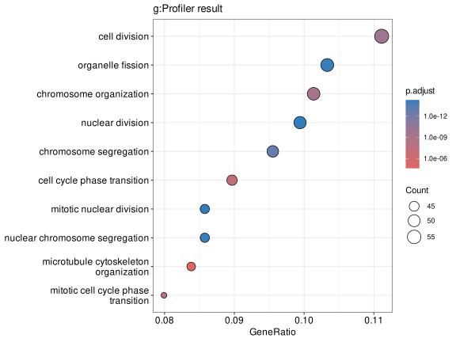
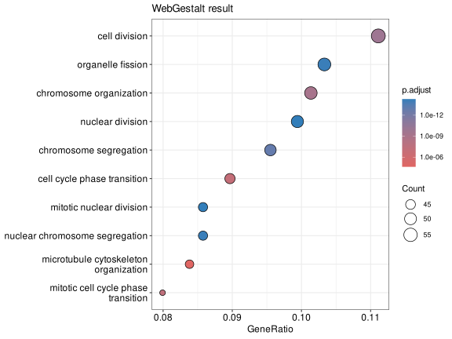
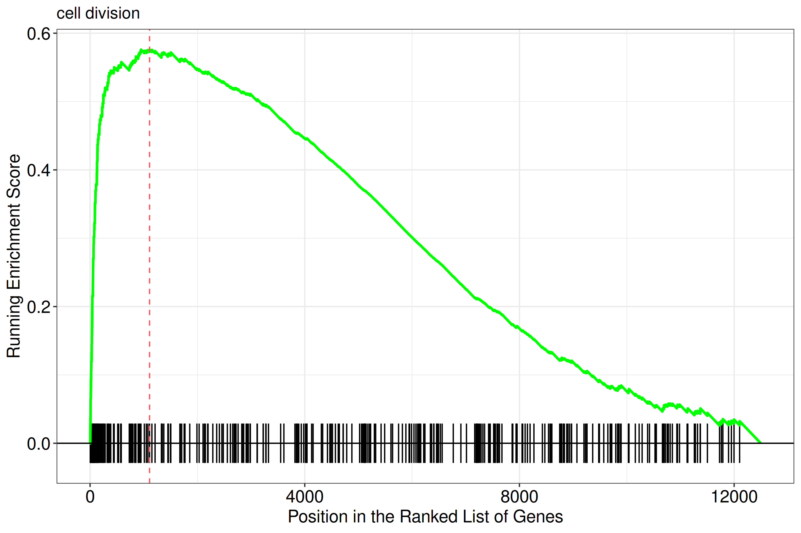
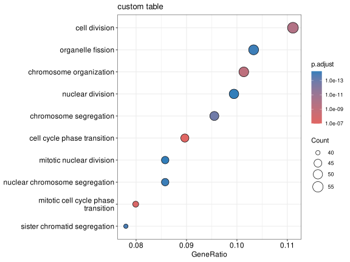

# Prepare one local GO result and reuse its full table for the importer examples.
library(ggplot2)
library(enrichit)
library(DOSE)
library(org.Hs.eg.db)
library(fgsea)
data(geneList, package = "DOSE")
stats <- sort(geneList, decreasing = TRUE)
de_genes <- names(stats)[abs(stats) > 1.5]
background <- names(stats)
ego_full <- enrichGO(
gene = de_genes,
OrgDb = org.Hs.eg.db,
keyType = "ENTREZID",
ont = "BP",
universe = background,
minGSSize = 5,
pvalueCutoff = 1,
qvalueCutoff = 1,
readable = FALSE
)
ego_table <- as.data.frame(ego_full)
term_genes <- strsplit(as.character(ego_table$geneID), "/", fixed = TRUE)
ratio_num <- function(x) as.numeric(sub("/.*", "", x))
ratio_den <- function(x) as.numeric(sub(".*/", "", x))
term_gene_text <- vapply(term_genes, paste, collapse = ";", FUN.VALUE = character(1))
term_gene_text_comma <- vapply(term_genes, paste, collapse = ", ", FUN.VALUE = character(1))
# ORA overlaps are kept above; GSEA needs complete pathways from the background.
go_map <- AnnotationDbi::select(
org.Hs.eg.db,
keys = background,
columns = c("GO", "ONTOLOGY"),
keytype = "ENTREZID"
) |>
dplyr::filter(!is.na(GO), ONTOLOGY == "BP") |>
dplyr::transmute(term = GO, gene = ENTREZID) |>
dplyr::distinct()
go_sets <- split(go_map$gene, go_map$term)
go_sets <- go_sets[lengths(go_sets) >= 5 & lengths(go_sets) <= 500]
go_names <- AnnotationDbi::select(
GO.db::GO.db,
keys = names(go_sets),
columns = "TERM",
keytype = "GOID"
) |>
dplyr::filter(!is.na(TERM)) |>
dplyr::transmute(term = GOID, name = TERM) |>
dplyr::distinct()
pathway_names <- stats::setNames(go_names$name, go_names$term)
# The ranked gene sets are complete pathways, not selected-gene overlaps.
fgsea_table <- fgsea(
pathways = go_sets,
stats = stats,
minSize = 5,
maxSize = 500,
eps = 0
)33 Import and visualize results from other tools
| Aspect | External-result import |
|---|---|
| Question | How can an external enrichment table be converted into a standard object without pretending that the source tool used the same design? |
| Input | A complete external result schema, gene-set membership, identifier namespace, and source-tool/database metadata. |
| Functions | as_enrichResult(), as_gseaResult(), import_fgsea(), and source-specific import helpers. |
| Output | Standard enrichResult/gseaResult objects suitable for enrichplot, plus an import record. |
| Limitations | Importing changes representation, not the original statistical design. Missing universe, ranking, gene–term membership, or database release cannot be reconstructed reliably. Online examples are optional and can fail independently of local plotting. |
This chapter imports results from enrichR, g:Profiler, WebGestalt, fgsea, and arbitrary result tables, then visualizes them as standard enrichment objects. For network failures and provenance, see external-service troubleshooting.
33.1 Importing results from other tools
The visualization methods described above work with any enrichResult or gseaResult object, and results produced by other enrichment tools can be brought into this framework with two routes:
- Tool-specific importers:
import_enrichr(),import_gprofiler2(),import_webgestalt()andimport_fgsea()map the output tables of popular tools to the canonical schema (see Section 33.1.5) and return enrichment objects directly. - Generic constructors:
as_enrichResult()andas_gseaResult(), provided by theenrichitpackage and re-exported byenrichplot, convert any result table that follows the canonical column schema.
Both routes return standard enrichResult / gseaResult objects, so every visualization introduced in this chapter (barplot(), dotplot(), cnetplot(), gseaplot(), …) works on them.
The online calls are marked eval: false because service databases and network availability change over time. The runnable examples use the local GO result above and reshape its full tables to the schemas returned by enrichR, g:Profiler, WebGestalt, fgsea, and arbitrary-table workflows.
33.1.1 enrichr
The enrichR::enrichr() function queries the enrichr web service and returns a list of result tables (one per database) with columns Term, Overlap, P.value, Adjusted.P.value and Genes:
library(enrichR)
res <- enrichr(de_genes, databases = c("KEGG_2021_Human", "GO_Biological_Process_2023"))import_enrichr() accepts either that list (use the db parameter to select a database) or a single result table.
enrichr_table <- data.frame(
Term = paste(ego_table$ID, ego_table$Description, sep = ";;"),
Overlap = paste(ego_table$Count, ratio_den(ego_table$BgRatio), sep = "/"),
P.value = ego_table$pvalue,
Adjusted.P.value = ego_table$p.adjust,
Genes = term_gene_text,
stringsAsFactors = FALSE
)
edo_er <- import_enrichr(enrichr_table, gene = de_genes,
universe = background)
edo_er#
# imported over-representation result
#
#...@organism UNKNOWN
#...@ontology UNKNOWN
#...4344imported terms found
'data.frame': 4344 obs. of 12 variables:
$ ID : chr "GO:0000280" "GO:0140014" "GO:0098813" "GO:0000070" ...
$ Description : chr "nuclear division" "mitotic nuclear division" "nuclear chromosome segregation" "mitotic sister chromatid segregation" ...
$ GeneRatio : chr "51/513" "44/513" "44/513" "37/513" ...
$ BgRatio : chr "11525/12495" "11525/12495" "11525/12495" "11525/12495" ...
$ RichFactor : num 0.00443 0.00382 0.00382 0.00321 0.0046 ...
$ FoldEnrichment: num 0.1078 0.093 0.093 0.0782 0.112 ...
$ zScore : num -71.1 -72.3 -72.3 -73.5 -70.8 ...
$ pvalue : num 1.99e-18 2.31e-18 4.69e-18 7.37e-18 8.39e-18 ...
$ p.adjust : num 5.01e-15 5.01e-15 6.79e-15 7.29e-15 7.29e-15 ...
$ qvalue : num 5.01e-15 5.01e-15 6.79e-15 7.29e-15 7.29e-15 ...
$ geneID : chr "81620/9928/51203/4603/1111/991/8438/220134/9055/26255/983/4751/10615/652/2491/9212/24137/22974/3833/5888/5347/1"| __truncated__ "81620/9928/51203/1111/991/220134/9055/983/4751/10615/652/2491/9212/24137/22974/3833/5347/11130/3479/6790/701/72"| __truncated__ "81620/9928/51203/991/220134/9055/26255/983/4751/10615/2491/9212/990/24137/22974/3833/10460/5347/11130/701/7272/"| __truncated__ "81620/9928/51203/991/220134/9055/983/10615/2491/9212/24137/22974/3833/5347/11130/701/7272/64151/23397/56992/332"| __truncated__ ...
$ Count : num 51 44 44 37 53 40 49 57 25 24 ...The result is a standard enrichResult object, ready for any visualization:
aplot::plot_list(
dotplot(edo_er, showCategory = 10) + ggtitle("enrichr result"),
cnetplot(edo_er, showCategory = 2),
ncol = 2, tag_levels = "A"
)
33.1.2 g:Profiler
gprofiler2::gost() returns a list whose result element is a data.frame with columns term_id, term_name, p_value, query_size, intersection_size, term_size, effective_domain_size and intersections:
library(gprofiler2)
gostres <- gost(de_genes, organism = "hsapiens")gost_table <- data.frame(
term_id = ego_table$ID,
term_name = ego_table$Description,
p_value = ego_table$pvalue,
adjusted_p_value = ego_table$p.adjust,
query_size = length(de_genes),
intersection_size = ego_table$Count,
term_size = ratio_num(ego_table$BgRatio),
effective_domain_size = length(background),
stringsAsFactors = FALSE
)
gost_table$intersections <- I(term_genes)
x_gp <- import_gprofiler2(list(result = gost_table))
head(
as.data.frame(x_gp)[,
c("ID", "Description", "GeneRatio", "BgRatio", "pvalue", "Count")
],
3
) ID Description GeneRatio BgRatio
GO:0000280 GO:0000280 nuclear division 51/513 299/12495
GO:0140014 GO:0140014 mitotic nuclear division 44/513 225/12495
GO:0098813 GO:0098813 nuclear chromosome segregation 44/513 229/12495
pvalue Count
GO:0000280 1.985424e-18 51
GO:0140014 2.308063e-18 44
GO:0098813 4.687156e-18 44If the table has no query_size column, pass the query genes with the gene parameter for exact GeneRatio values.
dotplot(x_gp, showCategory = 10) + ggtitle("g:Profiler result")
33.1.3 WebGestalt
WebGestaltR() returns a summary table with columns geneSet, description, size, overlap, rawPValue, adjPValue and userIds:
library(WebGestaltR)
wg <- WebGestaltR(enrichMethod = "ORA", organism = "hsapiens",
enrichDatabase = "pathway_KEGG", interestGene = de_genes,
interestGeneType = "genesymbol", referenceGene = background,
referenceGeneType = "genesymbol")wg_table <- data.frame(
geneSet = ego_table$ID,
description = ego_table$Description,
size = ratio_num(ego_table$BgRatio),
overlap = ego_table$Count,
rawPValue = ego_table$pvalue,
adjPValue = ego_table$p.adjust,
userIds = term_gene_text,
stringsAsFactors = FALSE
)
x_wg <- import_webgestalt(wg_table, gene = de_genes,
universe = background)dotplot(x_wg, showCategory = 10) + ggtitle("WebGestalt result")
33.1.4 fgsea
The fgsea() function (Korotkevich et al. 2019) takes a named statistics vector and a list of gene sets, and returns a data.frame with columns pathway, ES, NES, pval, padj, size and leadingEdge:
library(fgsea)
data(geneList, package = "DOSE")
# Use complete gene sets; an ORA overlap is not a pathway definition.
pathways <- go_sets
fgres <- fgsea(pathways = pathways, stats = stats)For plots that use ranked positions, pass the original statistics vector and the complete pathway list to import_fgsea().
fgres <- fgsea_table
genesets_for_import <- go_sets
gx <- import_fgsea(fgres, stats = stats, geneSets = genesets_for_import)
gx@result$Description <- unname(pathway_names[as.character(gx@result$ID)])
gx@result$Description[is.na(gx@result$Description)] <-
as.character(gx@result$ID[is.na(gx@result$Description)])
fgsea_id <- which.max(abs(gx@result$NES))
gx@result[fgsea_id, c("ID", "Description", "NES", "p.adjust")] ID Description NES p.adjust
GO:0051301 GO:0051301 cell division 2.70696 7.615191e-25The ranked-metric panel is dense for a list of this size, so the figure shows the running-score panel. The score is still computed from the full ranking.
gseaplot(
gx,
geneSetID = fgsea_id,
by = "runningScore",
title = gx@result$Description[fgsea_id]
)
33.1.5 Arbitrary result tables
Tools that do not have a dedicated importer (e.g. DAVID, or in-house scripts) can be converted with the generic constructors. as_enrichResult() requires a data.frame with ID, pvalue and at least one of geneID, Count or GeneRatio; the remaining canonical columns are derived when the query genes (gene), the universe (universe) and optionally the gene sets (geneSets) are supplied. Column aliases (e.g. PValue, term_id, padj, FDR) are recognized automatically:
| column | required | content |
|---|---|---|
ID |
yes | term identifier |
Description |
no | term name (defaults to ID) |
pvalue |
yes | raw p-value |
p.adjust |
no | adjusted p-value (computed with pAdjustMethod if absent) |
qvalue |
no | q-value (estimated if absent) |
geneID |
no | overlap genes, separated by / |
Count |
no | number of overlap genes |
GeneRatio |
no | k/n: overlap size / query size |
BgRatio |
no | M/N: gene set size / universe size |
custom <- data.frame(
term_id = ego_table$ID[seq_len(min(30, nrow(ego_table)))],
name = ego_table$Description[seq_len(min(30, nrow(ego_table)))],
PValue = ego_table$pvalue[seq_len(min(30, nrow(ego_table)))],
FDR = ego_table$p.adjust[seq_len(min(30, nrow(ego_table)))],
Genes = term_gene_text_comma[seq_len(min(30, nrow(ego_table)))],
stringsAsFactors = FALSE
)
x_ct <- as_enrichResult(custom, gene = de_genes)
head(
as.data.frame(x_ct)[,
c("ID", "Description", "geneID", "Count", "GeneRatio",
"pvalue", "p.adjust")
],
3
) ID Description
GO:0000280 GO:0000280 nuclear division
GO:0140014 GO:0140014 mitotic nuclear division
GO:0098813 GO:0098813 nuclear chromosome segregation
geneID
GO:0000280 81620/9928/51203/4603/1111/991/8438/220134/9055/26255/983/4751/10615/652/2491/9212/24137/22974/3833/5888/5347/11130/3479/6790/701/7272/9232/7153/64151/27338/23397/56992/4288/332/146909/4085/10635/81930/9319/55143/11004/9787/891/10403/11065/29127/9700/3832/9493/1062/57405
GO:0140014 81620/9928/51203/1111/991/220134/9055/983/4751/10615/652/2491/9212/24137/22974/3833/5347/11130/3479/6790/701/7272/64151/27338/23397/56992/4288/332/146909/4085/81930/9319/55143/11004/9787/891/10403/11065/29127/9700/3832/9493/1062/57405
GO:0098813 81620/9928/51203/991/220134/9055/26255/983/4751/10615/2491/9212/990/24137/22974/3833/10460/5347/11130/701/7272/9232/1894/7153/64151/23397/56992/332/146909/4085/81930/9319/55143/11004/9787/891/10403/11065/29127/9700/3832/9493/1062/57405
Count GeneRatio pvalue p.adjust
GO:0000280 51 51/513 1.985424e-18 5.013113e-15
GO:0140014 44 44/513 2.308063e-18 5.013113e-15
GO:0098813 44 44/513 4.687156e-18 6.787002e-15dotplot(x_ct, showCategory = 10) + ggtitle("custom table")
For GSEA-type results (with ranked statistics), use as_gseaResult() instead, passing the ranked vector via the geneList parameter:
gx2 <- as_gseaResult(fgres, geneList = stats,
geneSets = genesets_for_import)33.2 Reproducibility record
When importing an external result, retain the source tool and version, database and release, original query genes or ranked statistics, universe/background, identifier namespace, conversion parameters, and the canonical result object. The session information below records the software environment used to render this chapter; it is not a substitute for recording the external database release.
sessionInfo()R version 4.6.1 (2026-06-24)
Platform: x86_64-pc-linux-gnu
Running under: Ubuntu 24.04.5 LTS
Matrix products: default
BLAS: /usr/lib/x86_64-linux-gnu/openblas-pthread/libblas.so.3
LAPACK: /usr/lib/x86_64-linux-gnu/openblas-pthread/libopenblasp-r0.3.26.so; LAPACK version 3.12.0
locale:
[1] LC_CTYPE=C.UTF-8 LC_NUMERIC=C LC_TIME=C.UTF-8
[4] LC_COLLATE=C.UTF-8 LC_MONETARY=C.UTF-8 LC_MESSAGES=C.UTF-8
[7] LC_PAPER=C.UTF-8 LC_NAME=C LC_ADDRESS=C
[10] LC_TELEPHONE=C LC_MEASUREMENT=C.UTF-8 LC_IDENTIFICATION=C
time zone: UTC
tzcode source: system (glibc)
attached base packages:
[1] stats4 stats graphics grDevices utils datasets methods
[8] base
other attached packages:
[1] fgsea_1.38.0 org.Hs.eg.db_3.23.1 AnnotationDbi_1.74.0
[4] IRanges_2.46.0 S4Vectors_0.50.3 Biobase_2.72.0
[7] BiocGenerics_0.58.1 generics_0.1.4 DOSE_4.7.3
[10] enrichit_0.2.5 ggplot2_4.0.3 dplyr_1.2.1
[13] enrichplot_1.99.6 clusterProfiler_4.21.2 knitr_1.52
[16] yulab.utils_0.2.5
loaded via a namespace (and not attached):
[1] DBI_1.3.0 gson_0.2.1 httr2_1.3.0
[4] rlang_1.3.0 magrittr_2.0.5 otel_0.2.0
[7] compiler_4.6.1 RSQLite_3.53.3 png_0.1-9
[10] systemfonts_1.3.2 callr_3.8.0 vctrs_0.7.3
[13] reshape2_1.4.5 stringr_1.6.0 pkgconfig_2.0.3
[16] crayon_1.5.3 fastmap_1.2.0 XVector_0.52.0
[19] labeling_0.4.3 rmarkdown_2.32 ps_1.9.3
[22] purrr_1.2.2 bit_4.6.0 xfun_0.61
[25] cachem_1.1.0 aplot_0.3.2 jsonlite_2.0.0
[28] blob_1.3.0 tidydr_0.0.6 BiocParallel_1.46.0
[31] tweenr_2.0.3 cluster_2.1.8.2 parallel_4.6.1
[34] R6_2.6.1 stringi_1.8.9 RColorBrewer_1.1-3
[37] GOSemSim_2.39.3 Rcpp_1.1.2 Seqinfo_1.2.0
[40] ggtangle_0.1.3 splines_4.6.1 Matrix_1.7-5
[43] igraph_2.3.3 aisdk_1.5.0 tidyselect_1.2.1
[46] qvalue_2.44.0 yaml_2.3.12 codetools_0.2-20
[49] processx_3.9.0 lattice_0.22-9 tibble_3.3.1
[52] plyr_1.8.9 treeio_1.37.1 withr_3.0.3
[55] KEGGREST_1.52.2 S7_0.2.2 evaluate_1.0.5
[58] gridGraphics_0.5-1 scatterpie_0.2.6 polyclip_1.10-7
[61] Biostrings_2.80.2 pillar_1.11.1 ggtree_4.3.1
[64] ggfun_0.2.1 scales_1.4.0 tidytree_0.4.8
[67] glue_1.8.1 gdtools_0.5.1 lazyeval_0.2.3
[70] tools_4.6.1 data.table_1.18.6.1 ggnewscale_0.5.2
[73] ggiraph_0.9.6 fs_2.1.0 fastmatch_1.1-8
[76] cowplot_1.2.0 grid_4.6.1 tidyr_1.3.2
[79] ape_5.8-1 nlme_3.1-169 patchwork_1.3.2
[82] ggforce_0.5.0 cli_3.6.6 rappdirs_0.3.4
[85] fontBitstreamVera_0.1.1 gtable_0.3.6 digest_0.6.39
[88] fontquiver_0.2.1 ggrepel_0.9.8 ggplotify_0.1.3
[91] htmlwidgets_1.6.4 farver_2.1.2 memoise_2.0.1
[94] htmltools_0.5.9 lifecycle_1.0.5 httr_1.4.9
[97] GO.db_3.23.1 fontLiberation_0.1.0 bit64_4.8.6
[100] MASS_7.3-65 33.3 Next steps
- For custom annotations rather than external result tables, see universal enrichment.
- For reusable resource metadata, see GSON.
References
Korotkevich, Gennady, Vladimir Sukhov, and Alexey Sergushichev. 2019. “Fast Gene Set Enrichment Analysis.” bioRxiv, October 22, 060012. https://doi.org/10.1101/060012.